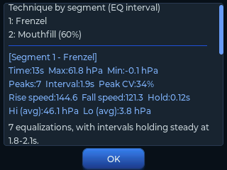
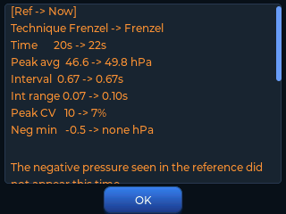
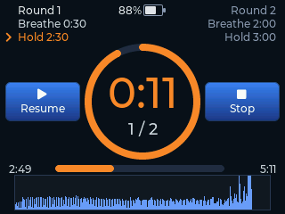
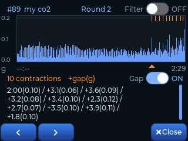

Equalscope
EqualscopeEqualizing by feel, now seen and analysed.
Contractions by hand, now graphed and logged.
Reads your pressure pattern, tells you what to fix, and records contractions on its own.
CO₂·O₂ table training with voice guidance, all from one device.
Dry-land training aid. Not waterproof. Not a medical device.

The days you actually get in the water are fewer than you think.
You don't only improve in the water. Dry-land training comes down to two things — equalization and breathing. But with equalization it was hard to know what to fix on your own; and breathing training meant carrying a phone to run an app.
Equalscope puts both in one device. Turn it on and pick a mode.
Two kinds of training, all on one device
You pick the mode when you turn it on — watch your equalizing, or run a breathing table.
Both go from measuring to recording and analysis inside the device.

Equalizing
Pressure you could never see, as a live graph at 40 samples per second. When the session ends it summarises count, rhythm and speed, and estimates the technique. Keep a good session as a reference graph to overlay, and it will compare that against your current one.

Breathing training (CO₂ · O₂)
Follow a CO₂ or O₂ table through rounds of breathing and holding. English voice guidance calls the phase and the time left, so you can train with your eyes closed, and every round is kept as a record.
Nothing extra to pack — no separate tool, no phone for an app.
One device in the bag. No app to launch and nothing to pair, so you can turn it on and measure straight away.
Breathing training arrived as a firmware update, and the promise it came
from — a device that grows with freedivers — has not changed.
What you use changes as you improve
Getting your equalization to work is not the finish line — it is where it starts.
Each stage needs something different, so the features you reach for change too.
From Valsalva to Frenzel
The step where most divers get stuck. Feel alone rarely gives you the answer, and this is where the graph and the analysis help. You can also load your instructor's good run as a reference and compare it with your own.
Mouthfill and CO₂ · O₂ tables
Once Frenzel works, the question becomes how cleanly you do it — and then mouthfill. Negative pressure is hard to feel, but it stays on the graph. CO₂ · O₂ table training runs on the same device.
Deeper dives · instructors · athletes
Simulating deep-dive training on dry land. The calibrated valve repeats the same condition exactly, and intervals match your descent rhythm. Screens and records are ready to show students.
At every stage — every session is saved, and can be compared with any earlier one.
Not a device you correct your equalization with once and put away, but one you keep beside you and keep using for as long as you freedive.
On the days you stay out of the water you can still train, and still get better.
It recognises how you equalize
From the shape of the pressure curve, Equalscope estimates which of six equalization patterns your session resembles. It reads pressure, not anatomy — treat the result as a reference, not a diagnosis.


Whether you are really on Frenzel, whether the pressure stays even, whether negative pressure creeps in.
When the session ends you get the pressure pattern and what to look at.



Contractions, recorded on their own
Hold your breath long enough and your belly starts to twitch on its own.
When the first one came, how many, how the gaps changed —
until now you had to keep track of them yourself.
In the hardest part of the hold, of all places.
Now there is nothing to keep track of.
The record builds while you stay with the training.

Just rest it on your belly
Lie down and put the device on your belly — no strap, nothing to attach, no button to press. While you hold, the belly movement is drawn live along the bottom of the screen.

Numbers when it ends
The round is worked out when it finishes. The summary keeps when the first one came, the average gap and how many, and the graph lists the time and movement size of each one.
The same idea that put your mouth pressure on a screen now keeps your contractions.
A hold used to leave a time. Now it leaves the movement that went with it.
Not found on existing training devices, and it arrived as a firmware update — devices already in use get it by updating.
Note: contractions are detected from belly movement. Small movements may go undetected, and the result can change with where the device sits or with other body movement.
Unpack, connect, measure
Three steps from the box to an analysis — the video shows the whole thing.
Connect
Click the tube into the device.
Measure
Press start and equalize. Your pressure is drawn as a live graph.
Review
The session saves itself. The analysis screen gives you the statistics and a short piece of advice.
What it does
Features you pick up as you improve — use what you need now, and the rest comes into play later.
Most of them are not found on existing training devices.
Live pressure graph
40 samples per second draw a smooth, unbroken curve. The device measures and draws it itself, so there is no lag — even fast repeated equalizations are caught.
Automatic analysis & advicenot on other devices
When a session ends the device summarises count, rhythm and speed, and estimates your technique from the pressure pattern. You can review your training with data, not with feel.
Reference overlay & comparisonnot on other devices
Save a good session as a reference and you can see it overlaid on your live graph. It doesn't stop at looking — the device compares the two and tells you what changed, against a coach's model run or against your own earlier one.
Every session saved
Sessions are stored automatically as CSV — on internal memory or a microSD card. Open them in Excel or Google Sheets and analyse them any way you like.
Three-finger screenshotnot on other devices
Touch the screen with three fingers and it saves exactly what you see — ready to use for student feedback or for sharing a record.
Firmware update by USB or SDnot on other devices
Drag the file onto the device over USB, or drop it on an SD card and power on — the update runs by itself. No PC software, no app, and new features keep arriving after you buy.
High / low pressure alarmnot on other devices
A sound tells you when you leave the range you set, so you don't have to keep watching the screen.
EQ interval trainernot on other devices
Build an alarm sequence — "every 2 s × 5, then every 4 s × 5" — to rehearse the equalization rhythm of a descent. Alarm points are marked on the graph so you can compare plan against reality.

Calibrated pressure valvenot on other devices
A dial with printed numbers. Repeat the exact same setting every time. Simulates the shrinking air volume of depth on dry land.
Seven themes · English / Koreannot on other devices
Seven colour themes, with the menu in English or Korean. Brightness, alarms and auto power-off are all set on the device itself.
CO₂ · O₂ table trainingbreathing mode
Four tables are built in, and you can keep up to 50 of your own. Set the number of rounds, the starting time and the step — the table builds itself, and shows you the last round and the total time before you commit.
Contractions recorded on their ownnot on other devices
Train with the device on your belly and the record builds without you tracking anything — when the first came, the average gap, how many, plus the time and movement size of each one. See Contraction above.
Tap to start and stopnot on other devices
Tap the device where it sits on the table to start measuring — and tapping to stop is supported too. It ignores taps while you are holding it. Turn it on in settings and set the sensitivity; it is off by default.
English voice guidancebreathing mode
Phase changes and remaining time are announced out loud, so you can train with your eyes closed. The first hold starts the way a competition does (3 · 2 · 1 → official top). Each announcement can be turned on or off, and the voice can be female or male.
Built around your own PBbreathing mode
Choose what percentage of your static PB to start from and the hold times are calculated for you. Not someone else's table — one that fits your body.
Competition-style startnot on other devices
Simulates the competition setting itself. A 3 · 2 · 1 countdown and the official top call go out, and from that moment measurement, stopwatch and intervals all begin together. It works in both modes — equalizing and breathing — so the starting routine becomes part of the training.
Seven colour themes — make the screen yours


A look at the screens
A 2.8-inch touch screen carries the live graph, the analysis and the files. Pinch to zoom, swipe to scroll through the curve.


What you get
Two colours to choose from. Everything needed to start training on land.


Main unit & tube
The device, a silicone tube and a metal fitting. A pressure valve with a marked dial lets you repeat the same setting exactly.
Equalvent
The nose piece you press against a nostril. Sold as a set with a fitting, a lanyard and a balloon.
Specifications
| Model | EQ-28 |
|---|---|
| Display | 2.8" colour touch LCD, 320 × 240 |
| Size | Device 90 × 77.6 × 25 mm · Case 180 × 120 × 60 mm |
| Measurement | Pressure sensor, 40 Hz sampling, auto zero calibration at power-on |
| Motion sensor | 6-axis accelerometer / gyro — contraction detection · tap to start · movement check while zeroing |
| Storage | Internal memory + microSD slot — CSV sessions and PNG screenshots (SD card not included) |
| Audio | Speaker — pressure alarms, EQ interval cues, and English voice guidance (female or male) |
| Power | Built-in 3.7 V 1,000 mAh Li-Po, USB charging |
| Connection | USB file transfer to PC · firmware update by USB cable or SD card |
| Connector | 4 mm pneumatic quick connector |
| Languages | English / Korean |
| In the box | Device · Equalvent mouthpiece · tube · calibrated pressure valve · USB cable |
| Use | Dry-land training only · not waterproof · not a medical device |
Quality · inspection
Every unit is checked by hand — function, durability and finish — before it ships.
On steeply curved surfaces (around the Equalvent mouth, for example) you may see faint
layer lines. That is a property of the process and does not affect function or durability.
Built-in battery · Storage
A rechargeable battery is built in, so you can start training without a cable.
In return, please keep one rule — do not leave it in a parked car.
A car interior can reach 60–70°C in summer. Long exposure to heat can make the battery swell or catch fire, and the case can deform.
Ordering from outside Korea
Orders are paused right now while we rework what comes in the box.
Equalscope is made in small batches in South Korea,
and each unit is inspected by hand before it ships.
Send us a message and we will let you know when orders open again.
Please note: the device carries Korean radio certification (KC). It is sold as a personal training aid; any import duties or local requirements in your country are the buyer's responsibility.
Firmware & manual
Drag the firmware onto the device over USB, or copy it to an SD card and power on — it updates itself.